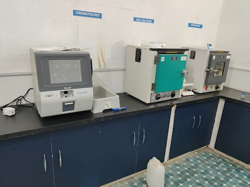
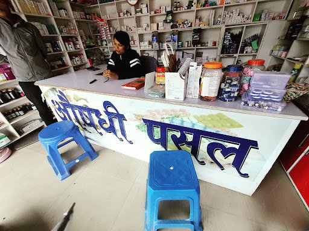

Preparing for Your Monthly Senior Cardiologist Visit in Surkhet
How to prepare your BP log, ECG, and blood reports ahead of our 3rd Saturday heart clinic at Gangamala Polyclinic.
Read Full ArticleGangamala Polyclinic Pvt. Ltd. delivers daily specialist OPD in Gynecology, Orthopedics, and Dermatology, monthly Senior Cardiology clinics from Shahid Gangalal National Heart Centre, plus on-site USG, ECG, X-Ray, Haematology Lab, Pharmacy, and Minor OT.
Gynecology, Orthopedics & Skin Care specialists available daily.
Dr. Amrit Bogati (Shahid Gangalal) every 3rd Saturday B.S.
Senior Radiologist USG, automated Haematology Lab & Minor OT.
Birendranagar-6 · Call 083-520611 · In-house औषधी पसल.


Registered in 2073 B.S. (Reg. No. 159951) and centrally located on Jumla Road, Birendranagar-6, Surkhet, Gangamala Polyclinic Pvt. Ltd. (गंगामाला पोलिक्लिनिक प्रा. लि.) brings specialist consultations, skin care, and complete diagnostic facilities together under one accessible roof.
From daily Gynecology, Orthopedic, and Dermatology OPDs to Senior Radiologist Ultrasonography (USG), automated Haematology lab testing, ECG, X-Ray, sterile Dressing & Minor OT, and our stocked in-house pharmacy (औषधी पसल), every service is built around accurate diagnosis and patient comfort.
Click any service card to explore clinical scope, treating specialist, on-site facilities, and book your visit.
Daily specialist OPD by Dr. Kritika Thapa covering prenatal care, menstrual disorders, PCOS, fertility counseling, and menopause care.
Daily OPD by Dr. Tejendra Saud for fractures, arthritis, knee & joint pain, sports ligament injuries, and spinal care with on-site X-Ray.
Daily Skin Care & Venereology OPD by Dr. Susmita Pradhan treating acne, eczema, melasma, fungal infections, allergies, and hair fall.
Regular 3rd Saturday B.S. Heart Clinic by Dr. Amrit Bogati (Shahid Gangalal National Heart Centre) plus daily 12-Lead ECG screening.
Qualified specialists serving Surkhet with daily OPD clinics, diagnostic radiology, and monthly tertiary cardiac care.
Clean clinical spaces, automated haematology equipment, and our stocked in-house pharmacy serving Surkhet every day.
Equipped with digital Haematology cell counter, Hot Air Oven sterilization, and clinical Incubator for reliable same-day lab reporting.
Conveniently stocked dispensing counter carrying verified prescription medicines for Gynecology, Orthopedics, Dermatology, and Cardiology.
Dedicated Ultrasonography by Senior Radiologist Dr. D.B. Gurung alongside prompt 12-Lead ECG, X-Ray, and sterile Minor OT dressing care.
Book ahead to avoid queues at Jumla Road, Birendranagar-6. Same-day USG, ECG, X-Ray, and Lab coordination available.
Select your specialist doctor or diagnostic service below. Our reception desk will confirm your visit token promptly.
Bringing experienced specialists and complete diagnostic clarity to families across Surkhet and Karnali Province.
Regular daily OPD by qualified Gynecologist, Orthopedician, and Dermatologist-Venereologist.
Dr. Amrit Bogati visits regularly every 3rd Saturday of the Nepali B.S. month for cardiac care.
Senior Radiologist USG (Dr. D.B. Gurung), digital X-Ray, ECG, and automated Haematology lab.
Clean sterile dressing, Minor OT procedures, and verified medicines at our in-house औषधी पसल.
Click any card to read how families across Surkhet and Karnali experience care at Gangamala Polyclinic.
"Very nice service! Clean facility, courteous staff, and smooth coordination between specialist consultation, laboratory testing, and the in-house pharmacy."
Read Full Story"Dr. Kritika Thapa listened patiently throughout my pregnancy. Having Dr. D.B. Gurung's USG and blood tests right downstairs made every visit stress-free."
Read Full Story"Consulting Dr. Amrit Bogati from Shahid Gangalal Heart Centre on the 3rd Saturday right in Surkhet saved our family costly trips to Kathmandu."
Read Full Story"Over-the-counter creams had damaged my skin for months. Dr. Susmita Pradhan identified the exact issue on my first visit and restored my skin completely."
Read Full StoryHelpful answers about our daily specialists, monthly Cardiology clinic, diagnostics, and location in Birendranagar.
Dr. Amrit Bogati (Senior Cardiologist, Shahid Gangalal National Heart Centre, Kathmandu) visits Gangamala Polyclinic regularly on every 3rd Saturday of the Nepali B.S. month. Because tokens fill fast, please call 083-520611 or book online in advance.
We provide daily OPD consultations from Dr. Kritika Thapa (Gynecologist), Dr. Tejendra Saud (Orthopedician), and Dr. Susmita Pradhan (Dermatologist & Venereologist), supported by Senior Radiologist Dr. D.B. Gurung for USG scans.
We offer a well-equipped Pathology & Haematology laboratory, Ultrasonography (USG), 12-Lead ECG, Digital X-Ray, sterile Dressing & Minor OT, and an in-house Pharmacy (औषधी पसल).
We are conveniently located on Jumla Road, Birendranagar-6, Surkhet, Karnali Province, Nepal—easily reachable from across Birendranagar and surrounding districts.
Click any article card to read specialist advice from Gangamala Polyclinic's medical team.
How to prepare your BP log, ECG, and blood reports ahead of our 3rd Saturday heart clinic at Gangamala Polyclinic.
Read Full ArticleA trimester-by-trimester guide to prenatal checkups, blood tests, and USG scans for expectant mothers in Karnali.
Read Full ArticleWhy unprescribed steroid creams worsen rashes and pigmentation—and what dermatologist-guided care looks like.
Read Full ArticleCentrally located on Jumla Road in Birendranagar, Surkhet — convenient for daily OPD visits, diagnostics, and pharmacy needs.
Gangamala Polyclinic Pvt. Ltd., Jumla Road, Birendranagar-6, Surkhet, Nepal
वीरेन्द्रनगर न.पा.-६, जुम्ला रोड, सुर्खेतDaily specialist appointments, USG/Lab inquiries, and 3rd Saturday Heart Camp tokens.
+977 83-520611Dr. Amrit Bogati (Shahid Gangalal National Heart Centre, Kathmandu).
Every 3rd Saturday (B.S.)Follow specialist camp schedules, health notices, and updates directly on Facebook.
@ganagamala.polyclinic.surkhet →